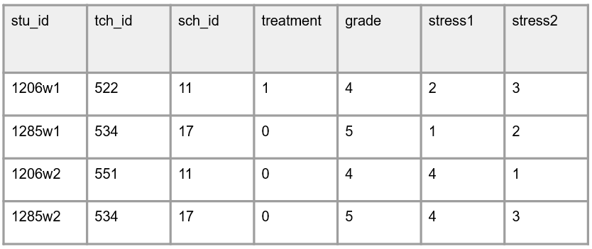

Creating unique participant study identifiers
By Crystal Lewis in tutorials
June 26, 2023
I recently had a discussion with a colleague about assigning unique participant identifiers in their study. In that discussion I learned that my opinion on how researchers should assign identifiers happened to be very different from how this colleague was assigning identifiers. This discussion then prompted me to question my assumptions about how I manage data (which I appreciate)! :)
For several hours after this discussion I scoured the internet for any advice, research, or opinions on how participant identifiers should be assigned. For the most part I came up empty handed. The only helpful information I found were codebooks and user guides describing how other people were assigning participant identifiers (e.g., ECLS-K:2011), but no documents explaining why a specific schema was the most appropriate way to assign identifiers. So I decided to crowdsource information on Twitter. I am grateful for everyone who shared their methods for assigning identifiers. While the responses did not necessarily give me a definitive answer to how we should assign participant identifiers, it did give me insight into people’s rationales and it allowed me to better articulate my opinion. For the last several months I have been writing about both how to assign unique study identifiers, as well as why they are necessary, and it is important to me to share good information.
What are unique participant identifiers
Before diving in to how to assign identifiers, I very quickly want to review what I mean by identifiers and why they are important. Participant unique identifiers are numeric or alphanumeric values and typically range from 2-10 digits. Using these identifiers, and removing all personally identifying information from a study dataset (e.g., name), is an important part of protecting the privacy of human participants. These identifiers also allow you to link data, either across time or across forms (e.g., think of merging wave 1 of a student survey with wave 2). The reason these identifiers are so great for linking data is because they do NOT change. They stay constant for a participant for the entire study. Even if a participant starts off in cohort 1 and is then re-recruited back again in cohort 3, the participant ID should stay the same. This allows you to always know who that participant is, and it provides the added benefit of helping to measure dosage.
These identifiers are assigned in the beginning of your study, during recruitment, and kept in a secure storage location along with participant identifying information. This roster of participants is your only linking key between a participant’s true identity and their study identifier.
The various ways that researchers assign unique identifiers
Imagine this scenario. You have a research study where you collect data from students and teachers. For this study you have developed this general schema for the ranges of your study IDs.
Even with this general schema assigned, I have learned that there are several different ways that people build unique participant identifiers. I am going to share 4 ways that I have learned that people build IDs and I will talk about what I see as the benefits and limitations of each.
Method 1: Completely random IDs, unique within and across entities and independent of any information
In this first scenario, the student identifier (stu_id) is simply randomly chosen from the stu_id range of 1200-1300. No other identifying information is included in that ID and the ID is not associated with any other information (e.g., name, teacher, grade level, age, cohort, treatment). The same scenario would happen for both teacher and school identifiers. Using this method, your student dataset might look something like this.
Using this method you can merge student data using the stu_id and you can also merge in information from either a teacher level or school level dataset using tch_id or sch_id. You can also cluster based on any of your identifier variables as needed.
Method 2: IDs made up of a combination of study information
In this second scenario, the information contained in a dataset is identical to the information above. However, the identifier variables now contain other information embedded in the identifier variable, rather than separated out. So an example would be to create a stu_id variable that consists of project+cohort+school+teacher+student. In the data it would look something like this.
From what I gathered from those who shared their methods with me, is that this method is particularly helpful to people who gather data from paper forms in the field. By adding a combination of information, it is easier to track the form. Ultimately though, what I felt I heard is that when it comes to merging and clustering data, this ID was eventually parsed out into the individual units (teacher ID, school ID, student ID, etc.). There were mentions of using regex to do this. Oftentimes people even added underscores between pieces of information in the identifier variable to make the parsing process much easier to do.
So knowing that the information is eventually parsed out anyway, my thoughts are that it might still be best to use method #1 and then add additional identifiers to forms to track information.
My biggest concern with method #2 in an educational research study is movement. While method #2 might work great for a cross-sectional study with one time point, I begin to worry about using this method for a longitudinal study. I personally have been a part of studies where students move to other teachers within the study or teachers move to other schools within the study, and this makes the information in the participant identifier no longer accurate. There needs to be a way to track changes in a study, while keeping your primary identifiers constant throughout a study and method #1 makes the most sense to me in these scenarios.
Here is an example where student 1206 switched to another study teacher in wave 2 of data collection, and this teacher also happens to be a “control” condition teacher, which is different compared to the wave 1 teacher. If method #2 was used to assign student ID, I’m not sure how we would account for these differences while still maintaining a static participant identifier.
Method 3: IDs made up of a combination of study information but identifiers are reused within entities
This method is identical to method #2, however within entities, IDs are reused. So this might mean that student IDs are only unique within teachers or schools, and then they are reused. Below is an example where you can see that the student ID portion of the participant ID is reused across teachers.
Again, while I think this method may be fine for cross-sectional studies, I would be worried to use this method for longitudinal studies where information may change. It seems both safer, and less time consuming to build the information into separate variables.
The additional concern I have with this method, is that if you do need to parse out information from the ID variable in this situation, you will end up with duplicate student identifiers, causing great confusion. Therefore, it’s probably best to always use unique identifiers within entities.
Method 4: IDs made up of a combination of study information with time related information included
This last method is identical to method #2 but would also contain time related information as well (e.g., wave, session, year). This one might be the most problematic to me because this method guarantees that participant identifiers do not stay constant (they will change each wave). This makes it not only difficult to track participants, but also difficult to merge data across time. With this method you would most certainly need to parse out pieces of your variable in order to merge data.

What I’ve heard from people is, similar to method #2, is that it can be helpful to keep track of data collection waves or session on forms in the field. While I absolutely get this, I think again, this problem can be remedied by adding data collection wave to the paper form and then entering it as a separate variable in your data (or attaching time to your variable names if merging in wide format).
| Long format | Wide format |
|---|---|
 |
Conclusion
The last thing that I didn’t really discuss much is the consideration for participant privacy. When it comes down to it, I think there probably isn’t much difference in terms of privacy across the four methods, as long as identifiers are completely randomly assigned within entities (e.g., within students, within teachers) and not associated with identifying information.
- For example, don’t order by name alphabetically or by DOB ascending or descending before assigning identifiers
- For example, don’t include personal information such as initials in identifiers
In the Twitter thread some people expressed concern about embedding other identifiers within a participant ID (e.g., including the school ID within a teacher ID). There were concerns this could make it easier to identify participants when there is a school with only one teacher for instance. This is possible and something to consider.
However, I am not sure that this concern is much different from people who use method #1 because often within datasets we include other relevant IDs (e.g. teacher and school ID within a student dataset, or a school ID for a teacher dataset). So this information will be available in either method. The only benefit to method #1 is that you could easily choose to remove those other identifiers if you wanted to (although they are often relevant for clustering or linking information).
Which method is best?
I am definitely not here to say that there is one correct way to assign identifiers. Especially across disciplines, there is a ton of variation in how identifiers are assigned and I understand the necessity of that. The way we collect and use information across disciplines is not necessarily the same.
But I will say after reviewing all of the information above, method #1 definitely still makes the most sense to me for the field of education research. In this field I believe it provides the following benefits over the other methods:
- Removes the need to parse information at a later point. Each piece of information is stored uniquely within your dataset. This way you can easily link, cluster by, or even remove an individual piece of information easily at any time.
- Keeps your identifiers constant. As mentioned above, if your study is longitudinal, it is very possible that information changes for participants. Associated schools, teachers, treatment, cohorts, and more can change throughout the study and you don’t want to keep changing your participant ID every time this information changes. This makes it extremely difficult to both link data and track participants over time.
- It can potentially keep your data more secure. As mentioned above, all 4 methods are fairly similar in terms of security but at least method #1 gives you the option to remove grouping identifiers if necessary.
- Concerns about keeping track of forms in the field can be easily remedied for method #1
- Last, this wasn’t mentioned, but it may be a concern to people: Merging using multiple fields. Say your study is designed to recruit students in both math and reading classes and you expect students to appear in your data more than once (once with a reading teacher and once with a math teacher), that’s okay. You don’t need to have that information combined. You can still keep that information separate in a dataset and combine as needed. In most software you can concatenate variables as needed OR you can merge on multiple variables (so if you need to merge wave 1 data with wave 2 data, you can merge using both the student ID and the teacher ID). Below is an example of of how you might do this in R.
svy_wave1 %>%
left_join(svy_wave2, by = c("stu_id", "tch_id"))
Last, there were a few things that I felt we did all come to consensus on!
- Identifiers should be stored as character variables. Even if an ID variable is all numbers, it should be stored as character type. This helps prevent people from inappropriately working with ID variables (i.e., taking a mean of an ID variable).
- It is important to keep identifiers distinct across entities. Use different ranges for students, teachers, and schools to reduce confusion on who a data point belongs to.
- If you are running multiple projects at once, especially using the same forms across projects, find a way to denote differences across projects. That could be assigning a project ID that is added as a variable or embedded in participant IDs. Or you can choose ID ranges that are different across projects (e.g., Project A
stu_idis 1000-2000, Project Bstu_idis 5000-6000).
Thank you for reading! If you are someone who shared your method with me and I misinterpreted anything, please let me know! Or if you are a researcher who wants to share your thoughts on these four methods, or other methods you use to create identifiers, please share your ideas with me any time!